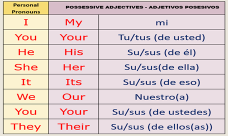
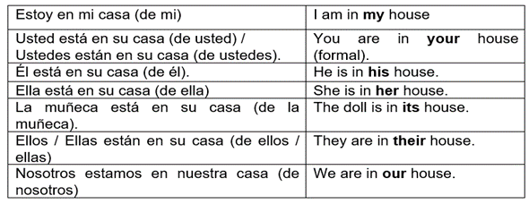

THE POSSESSIVE ADJECTIVES
"The Possessive Adjectives" Los adjetivos posesivos en inglés como su palabra lo indica, designan posesiones o pertenencia. Sirven para responder la pregunta ¿de quién es? Hacen referencia al poseedor y no a la cosa poseída.
“Su” es un adjetivo o determinante que indica posesión, referida a usted, él, ella, ello (eso), ellos o ellas, nosotros. En inglés se cuenta con seis palabras distintas para traducirlo: your, his, her, its, their, our.
Revisemos la siguiente tabla:

En español, lo más normal es omitir el pronombre sujeto (usted, él, ella, ellos, etc.), y por el contexto debería quedar claro a quién nos referimos. En inglés, sin embargo, siempre se necesita un pronombre personal.
Los adjetivos posesivos ingleses que se emplean como equivalentes de “su”. Algunos ejemplos son:

Apreciados estudiantes los invito a ver el video acerca de los adjetivos posesivos y pronombres personales para que refuercen sus conocimientos previos y estén en capacidad de realizar los ejercicios propuestos.
Vamos a continuar con la adquisición de nuevos conocimientos acerca de la gramática inglesa. En esta sección vas a trabajar con una presentación donde vas a encontrar información relacionada con los pronombres personales y los adjetivos posesivos, su forma y ejemplos de uso de ellos dentro de las oraciones.
Luego de revisar la presentación, desarrolla los ejercicios propuestos:
Desarrollar los ejercicios en el cuaderno para que practiques los temas vistos.
Ir al link de liveworksheets dar clic e ingresar para desarrollar la guía propuesta. Solamente puedes utilizar hasta dos intentos para resolverla. Esto es lo que debes hacer:
1. Arrastrar el pronombre personal debajo de la imagen correspondiente.
2. Selecciona el pronombre correcto para reemplazar las palabras.
3. Escoge la respuesta correcta de las dos opciones presentadas para completar las frases
4. Selecciona la forma correcta del verbo para cada frase
5. Arrastra la imagen del pronombre correcto para completar las oraciones.
https://www.liveworksheets.com/es/w/en/english-second-language-esl/45395?authuser=0
Después de ver el video tutorial y las diapositivas de los pronombres personales y los adjetivos posesivos resuelve la siguiente guía de trabajo.
https://www.liveworksheets.com/w/en/english-second-language-esl/52730?authuser=0

Desarrolla los siguientes ejercicios propuestos en la siguiente pestaña, diviértete practicando y aprendiendo.